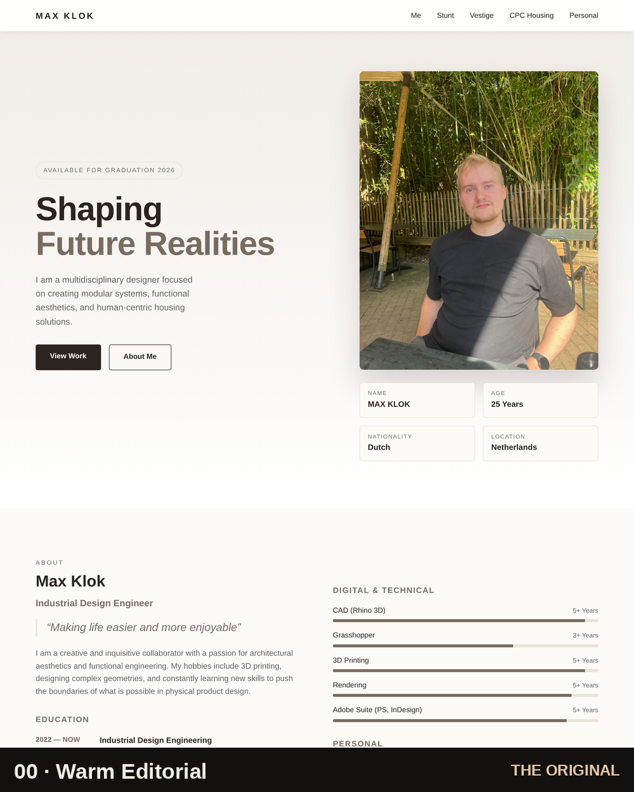
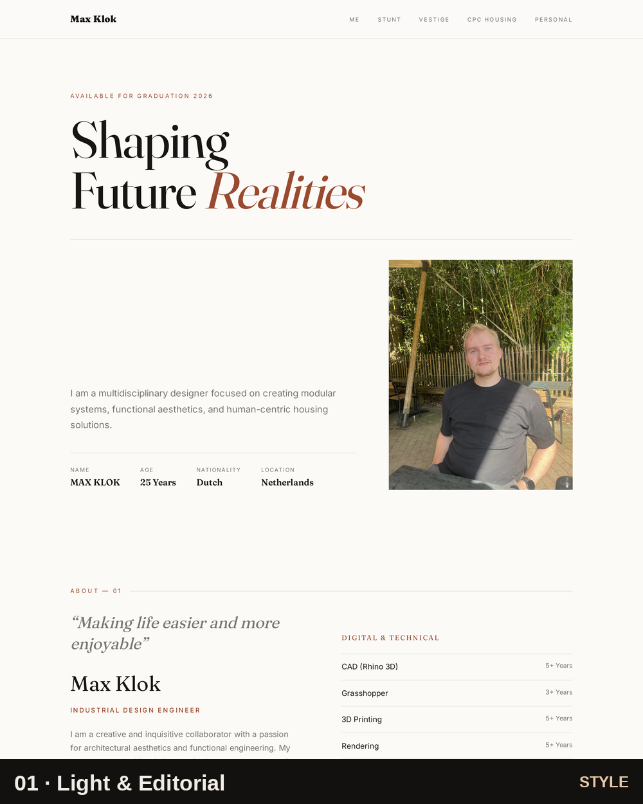
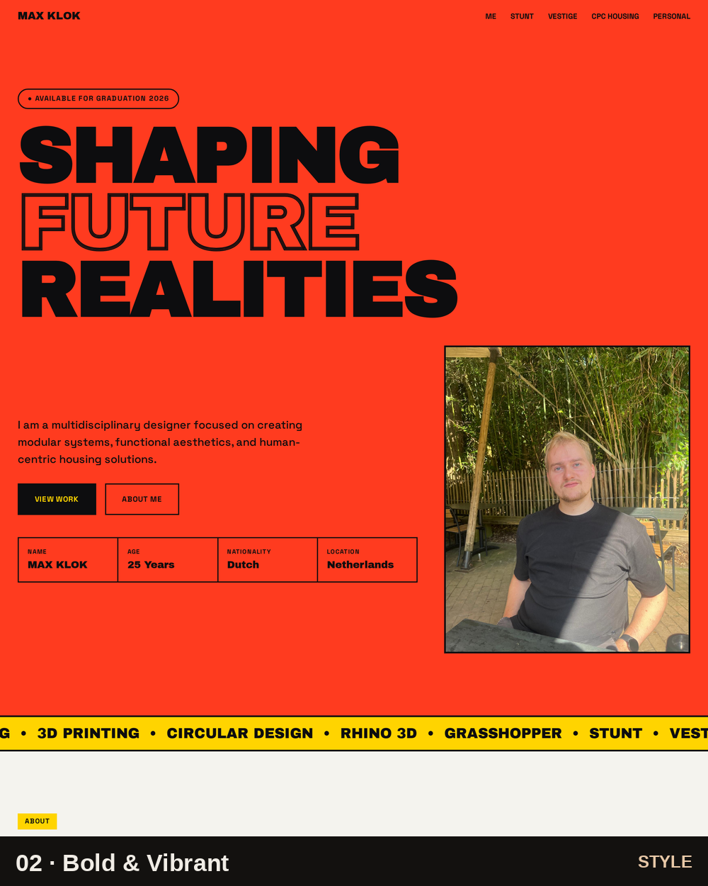
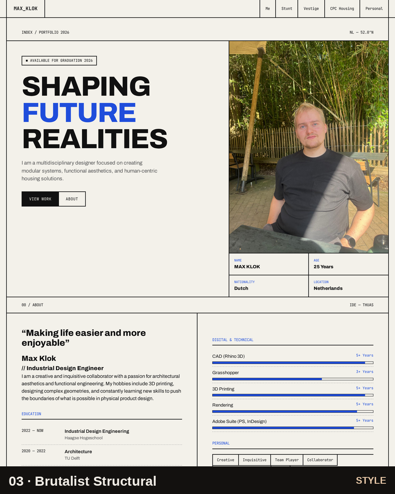
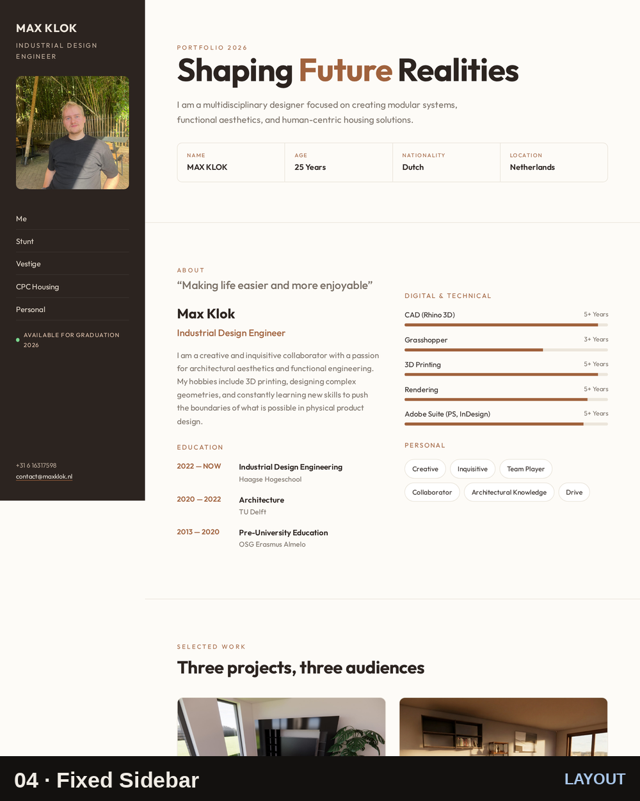
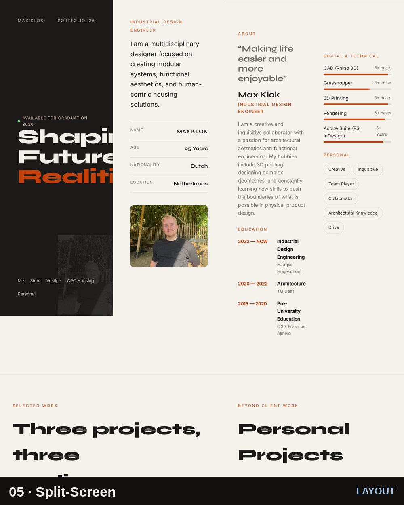
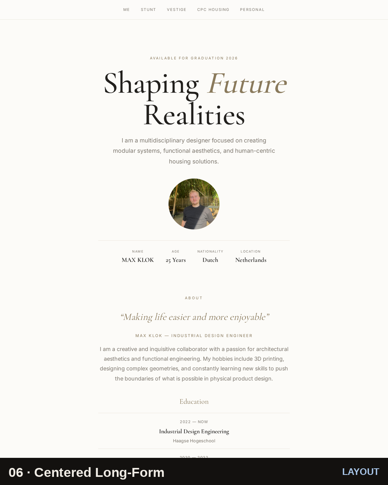

A faithful copy of my live portfolio (maxklok.nl), three restyled style directions, and three reworked layout directions. Content and structure are held constant, so every difference you see is a deliberate design decision.
4.3C is personal and cross-project: it is met by a recognisable personal style developed across projects — experimentation with different visual and product styles, styles adapted to each purpose and target audience, choices argued through theory of form, colour and perception, consistency within each project’s deliverables, and a recurring personal signature. Restyling and re-laying-out a single page isolates the design variable: same images, same copy, same sections — many different answers to “how should this feel, and where should the eye go?”
This restyling set is one strand of that evidence — the experimentation strand. The Vestige and Karabijn project deliverables are the others: worked evidence cases showing the same style choices and consistency in real, audience-specific work. They demonstrate 4.3C; they are not the definition of it.
The first row holds style experiments (colour, type, texture). The second row holds layout experiments (where the navigation lives, how the hero is split, how sections stack and how the eye is led).
Same skeleton, different visual language — each palette and type system argued from its intended audience.

A faithful rebuild of maxklok.nl: warm neutrals, system sans, split hero, calm three-card grid. Purpose: a graduation-ready designer who reads as measured and trustworthy.
Open version →
Serif display (Fraunces), hairline rules, numbered sections, work-as-list. Purpose: a design-literate, gallery/recruiter audience — quiet, magazine restraint.
Open version →
Archivo Black, a scrolling marquee, full-bleed colour blocks, image-filled tiles. Purpose: a younger, high-energy audience (the Stunt context) — impossible to ignore.
Open version →
Visible grid borders, monospace data-labels, hard edges, zero shadow. Purpose: an engineering audience — ‘show the structure’ taken literally.
Open version →Same content, restructured — the navigation, hero and section flow are physically rearranged to change the reading path.

Navigation moves to a fixed vertical left rail (logo, menu, portrait, contact); content scrolls in the right column. A two-up work grid replaces the three-up. Placement shift: persistent side nav, no top bar.
Open version →
A 50/50 hero: a sticky dark identity panel on the left while the right side scrolls. Projects become alternating left/right split rows. Placement shift: sticky pane + zig-zag project rhythm.
Open version →
A single narrow centred column with full-bleed image bands between sections — each project reads as a scrolling case study. Placement shift: centred axis, full-width imagery, top centred nav.
Open version →